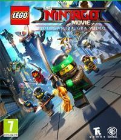
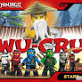
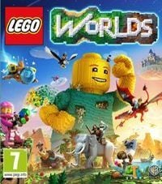
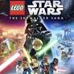
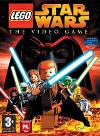
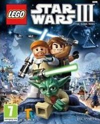
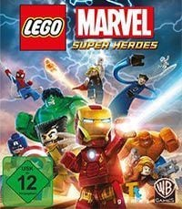
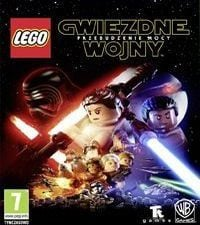
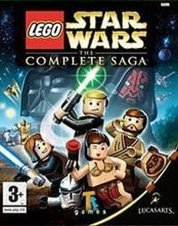

Najlepsze Gry LEGO!
Miejsce 10: The LEGO Ninjago Movie
The LEGO Ninjago Movie Video Game
Platformowa gra akcji, która trafiła do sprzedaży w momencie debiutu filmu The LEGO Ninjago Movie. Podobnie jak miało to miejsce w przypadku wcześniejszych gier spod szyldu słynnych klocków, za jej powstanie odpowiadało studio Traveller's Tales.

Miejsce 9 LEGO Ninjago Wu Cru
Wu Cru zostało Stworzone na Android i IOS w 2016 roku. Gra została usunięta.

Miejsce 8 LEGO Worlds
Kolejna propozycja studia Traveller’s Tales z popularnymi duńskimi klockami LEGO w roli głównej. W odróżnieniu od poprzednich odsłon cyklu, tym razem jej akcja nie przenosi nas do żadnego filmowego bądź komiksowego uniwersum.

Miejsce 7 LEGO Star Wars The Skywalker Saga
Ostateczna odsłona serii LEGO Star Wars, bazująca na dziewięciu filmowych epizodach Gwiezdnych wojen. Kierujemy setkami bohaterów z uniwersum Star Wars i odtwarzamy najsłynniejsze kinowe sceny w bardziej humorystycznej wersji.

Miejsce 6 LEGO Star Wars The Video Game
Kolejna produkcja zespołu Traveller's Tales, znanego z realizacji tak udanych gier jak m.in.: Crash Bandicoot: The Wrath of Cortex, Finding Nemo, czy Crash Twinsanity. Tym razem studio zajęło się przedstawieniem przygód bohaterów Gwiezdnych wojen jako klockowych ludzików.

Miejsce 5 LEGO Star Wars III The Clone Wars
Gra akcji z elementami platformówki 3D, stanowiąca kolejną odsłonę „klockowej” sub-serii LEGO Star Wars. Fabuła LEGO Star Wars III: Clone Wars bazuje na motywach popularnego serialu animowanego Star Wars: Wojny Klonów.

Miejsce 4 LEGO Star Wars II The Original Trilogy
LEGO Star Wars II: The Original Trilogy jest kontynuacją jednego z najlepiej wykonanych produktów elektroniczno-rozrywkowych 2005 roku.
Teraz czas na nasze PEREŁKI!
Miejsce 3 LEGO Marvel Super Heroes
Gra akcji z bohaterami komiksów wydawnictwa Marvel w rolach głównych. Tytuł stworzony został przez specjalizujące się w „klockowych” produkcjach (m.in. LEGO Władca Pierścieni, LEGO Piraci z Karaibów, LEGO Harry Potter) studio Traveller's Tales.

Miejsce 2 LEGO Star Wars Przebudzenie Mocy
Kolejna odsłona bestsellerowego cyklu przygodowych gier akcji, łączących markę popularnych duńskich klocków LEGO z kultowym uniwersum Gwiezdnych Wojen.

Teraz na petardę. Deserek zostawiłem na koniec!
Miejsce 1 LEGO Star Wars The Complete Saga
Kompletne wydanie dwóch bestsellerowych gier z serii LEGO, bazujących na fabule sześciu dotychczasowych odsłon filmowego cyklu Gwiezdnych Wojen (podzielonych na klasyczną i nową trylogię).
